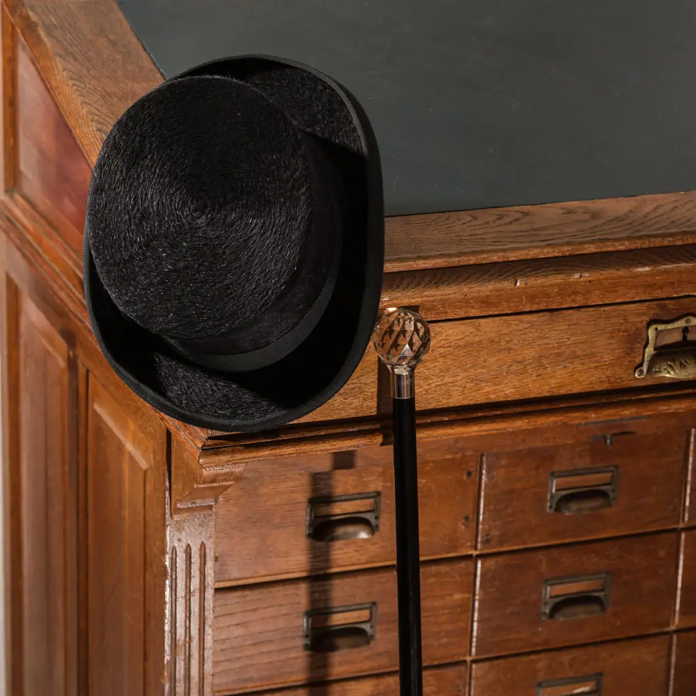
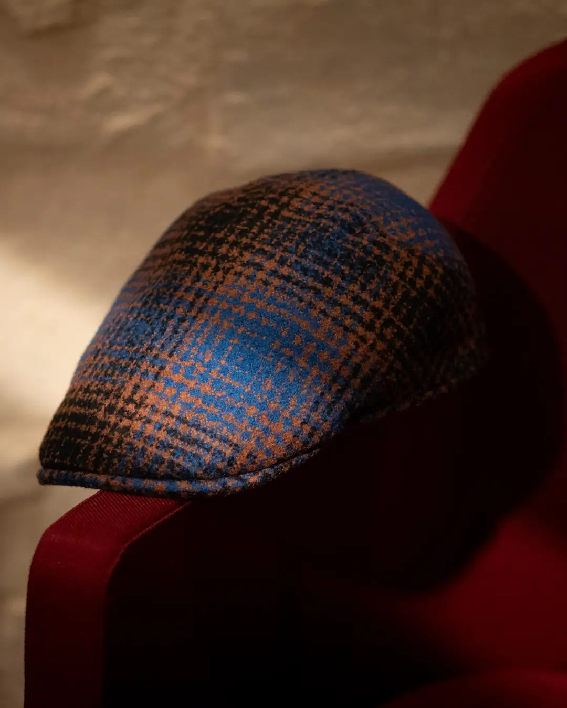
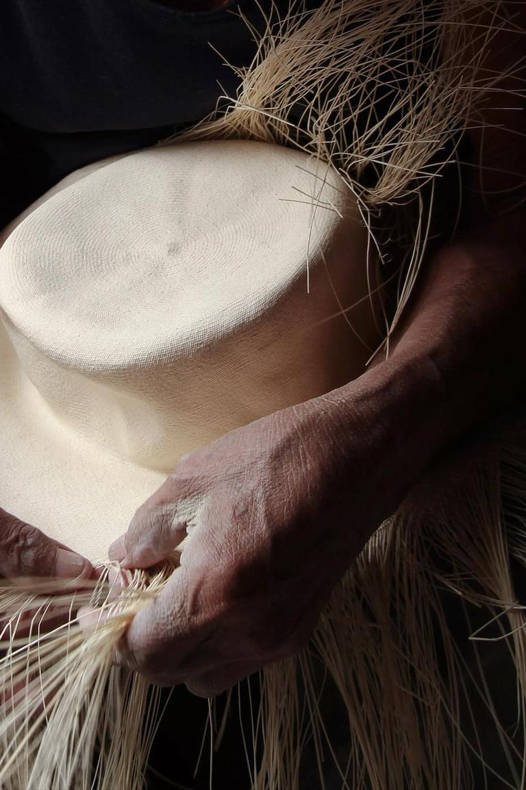
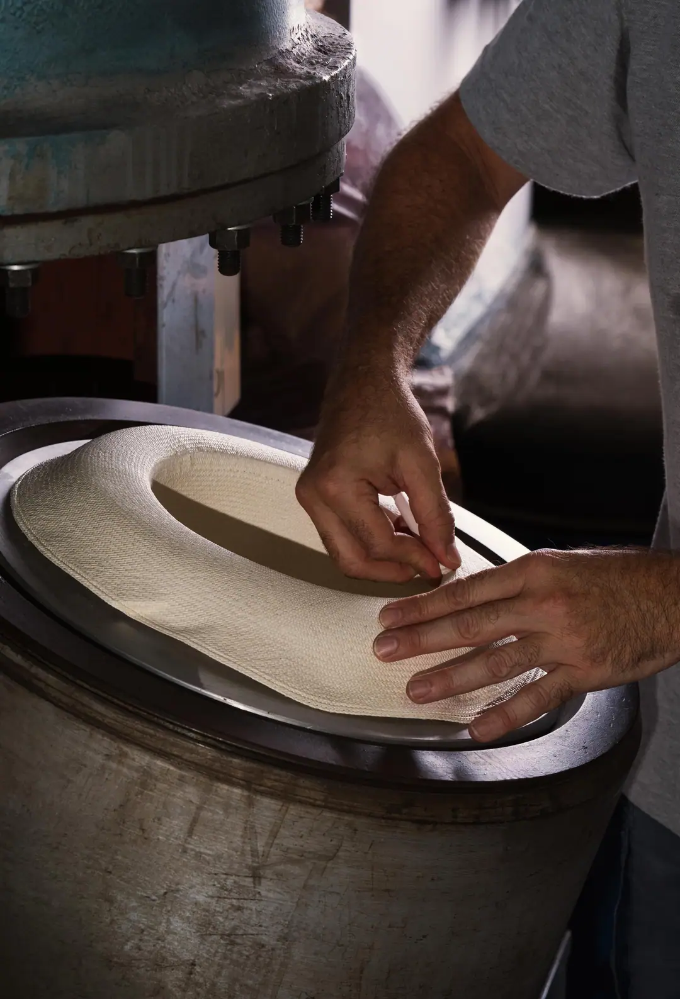
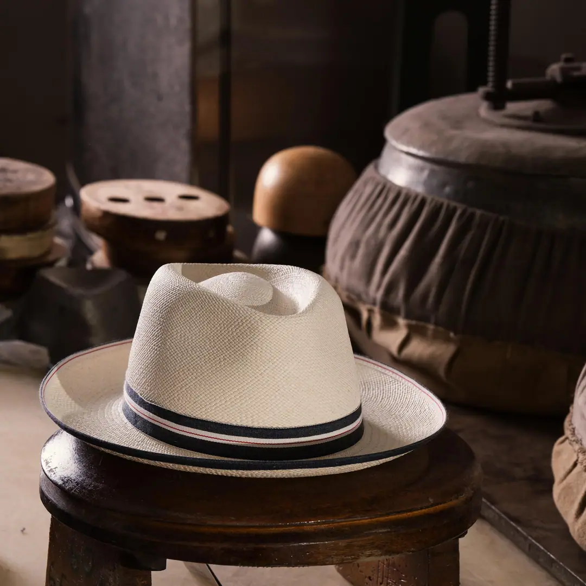
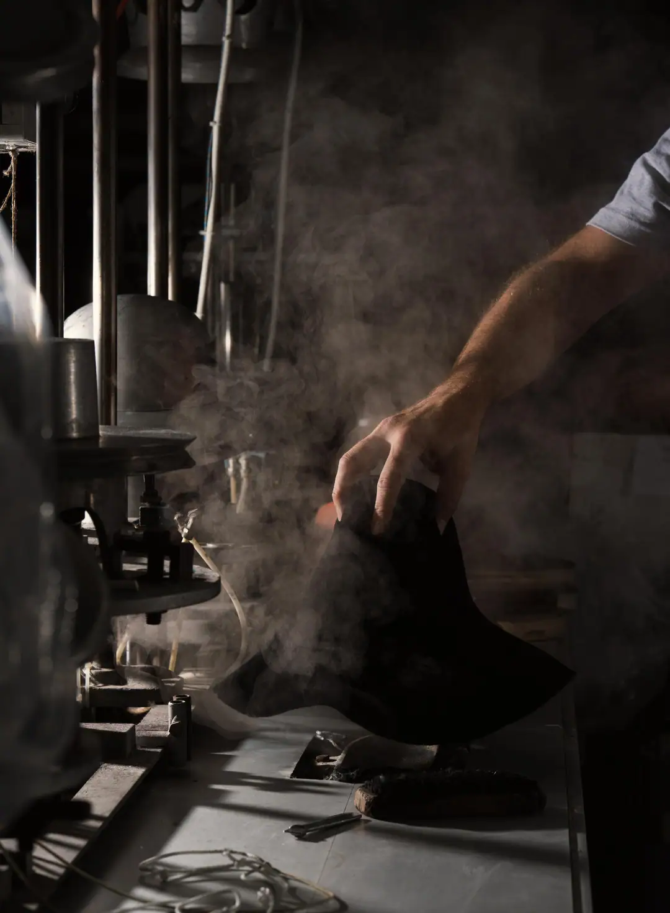
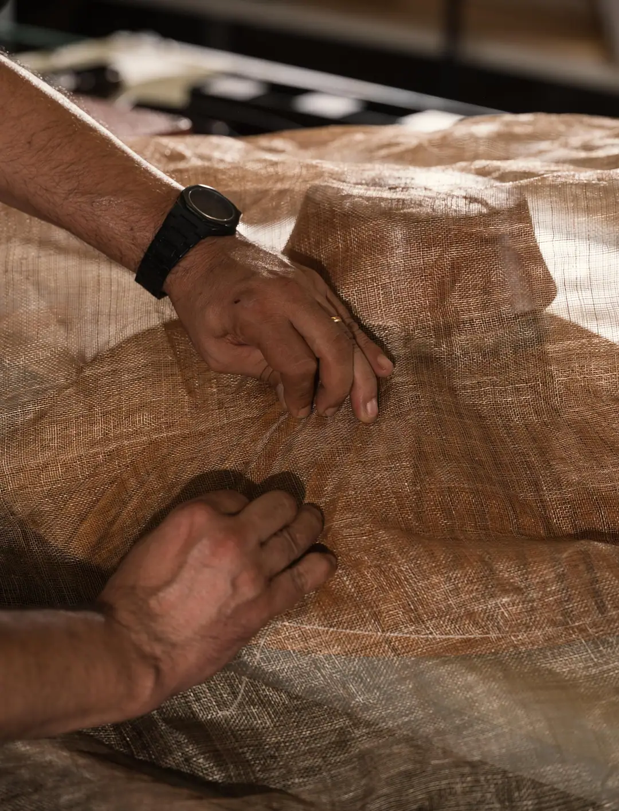
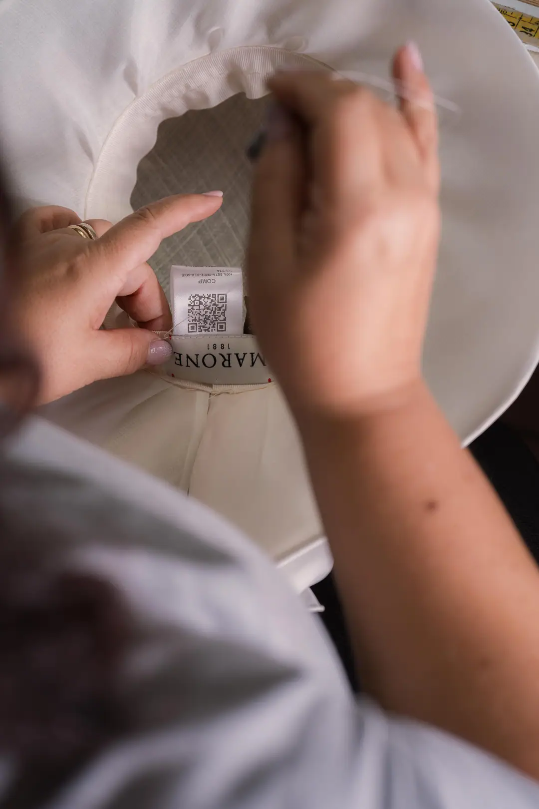
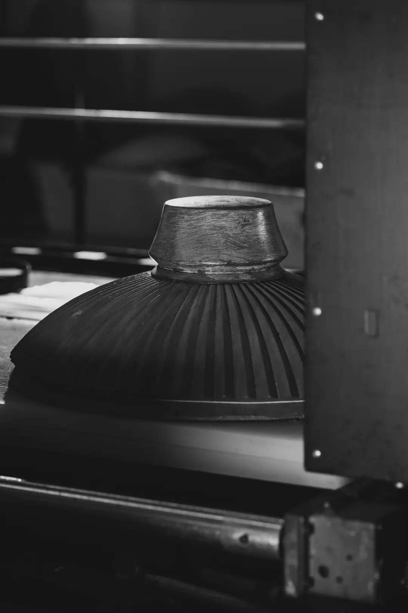

DESCUBRE EL MUNDO MARONE
Modelos Icono
CREACIONES EN DEVENIR
Forma y materia
El sombrero es emblema de su tiempo. Cuenta la libertad y la identidad de quien lo lleva. Indica lugar y pertenencia reivindicada, profesión y postura pública, mitos venerados e ideales por conquistar. Forma y materia, a primera vista, saben ocultar o revelar todo esto. Son un tocado para leer.


FIELTRO EN EL ESCENARIO
Ocasiones de gala, uniformes oficiales, entre el escenario y las salas reservadas. Cuando el sombrero es identidad inconfundible y marca el imaginario a primera vista. Del fieltro base a las instantáneas de la gran pantalla. Sacados de la Chistera.



PAJA AL SOL
Trenzados finísimos de paja Panamá Montecristi trabajados en Ecuador desde hace siglos. Formados con delicadeza y rematados en el borde y en la cinta con lazos y plumas. De los rostros del cine en película, son la sombra ligera del Fedora que deseas sobre el rostro.



TEJIDO SIEMPRE
De las fábricas de lana italianas, inglesas e irlandesas seleccionamos los rollos más codiciados. Tejidos irrenunciables y motivos repetidos se alternan sobre el ala estrecha del Trilby. Más adelante, algodón y lino enmarcan la mirada bajo la visera de gorras planas y de béisbol.



VELO EN LA GALA
Tramas sutiles, formas y tonalidades sorprendentes, culturas internacionales. Pliegues densos con inserciones joya y cuidado extremo. Del fascinator con redes y lentejuelas al vintage memorable, todo está permitido al tocado femenino de ceremonia.